CS184/284A Spring 2025 Homework 4 Write-Up
Link to webpage: https://cal-cs184-student.github.io/hw-webpages-alxdsptr/
Link to GitHub repository: https://github.com/cal-cs184-student/hw-webpages-alxdsptr
Overview
In this homework, we built a cloth simulator based on a mass-spring model. We first model the cloth as a grid of masses connected by springs which represent different kinds of constraints. Then we simulate the motion of the cloth under gravity and forces from the springs by using numerical integration. We also implemented collision handling between the cloth and other objects such as spheres and planes, as well as self-collision handling to prevent the cloth from intersecting itself. Finally, we implemented shaders to render the cloth with various visual effects.
I found the use of spatial hashing to accelerate self-collision detection to be a particularly interesting design choice, simple yet efficient. In addition, I found shader programming remarkable: we only need to write the vertex shader and fragment shader, and the GPU automatically handles all the remaining steps such as rasterization and interpolation, performing them in parallel. This achieves both high efficiency and great flexibility.
Part 1: Masses and springs
|
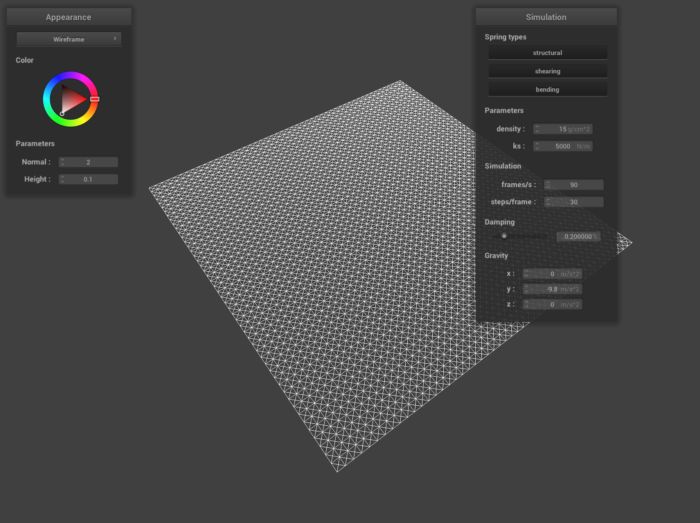 |
Wireframe comparison for different shearing constraints on scene/pinned2.json:
|
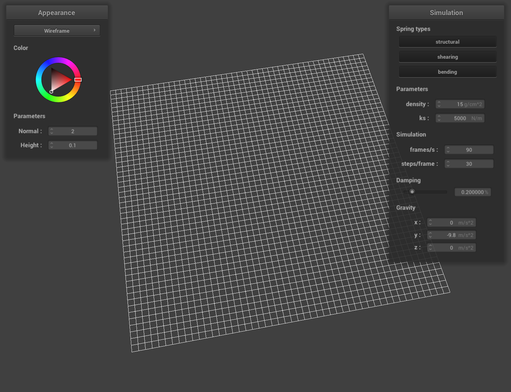 |
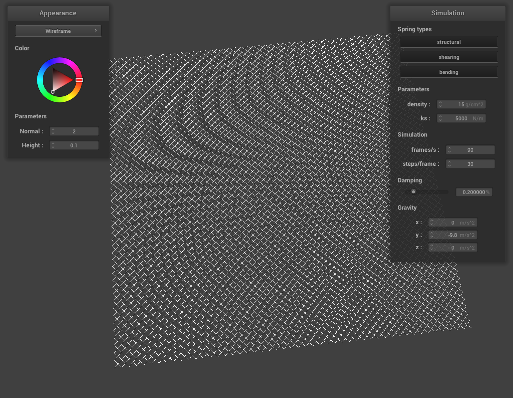 |
|
Part 2: Simulation via numerical integration
When ks is set very low (100), the cloth behaves as if it is extremely soft and flexible. During the falling process, it oscillates and vibrates intensely, producing rich, complex surface wrinkles reminiscent of ripples on water. A notable phenomenon also occurs during the simulation: the cloth tends to gather and pucker toward the center, forming a raised, twisted pinch point as seen in the left image below. In the final resting state, four diagonal lines extend from each corner of the cloth toward the center. With ks = 100, these lines stretch very close to the center of the cloth (as shown in the middle image below), whereas under the default parameters (ks = 5000), they only reach roughly halfway to the center.
When ks is set very high (200,000), the cloth behaves as if it is extremely stiff and rigid. Throughout the falling process, it remains nearly flat with almost no surface wrinkling or oscillation. In its final resting state, the cloth is likewise smooth and featureless, exhibiting only a slight gentle curve. The diagonal corner lines are entirely absent, as shown in the right image below.
|
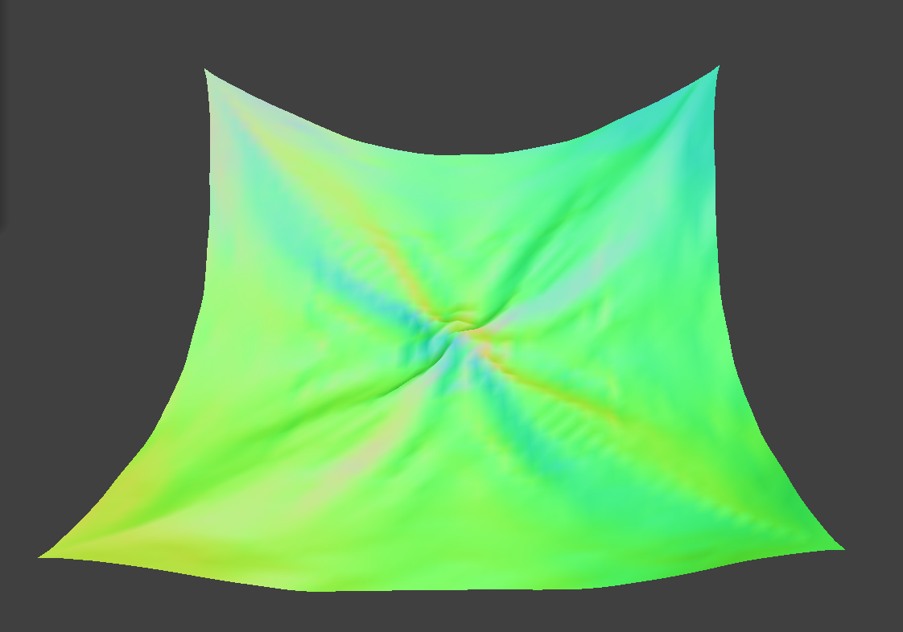 ks = 100 during fall |
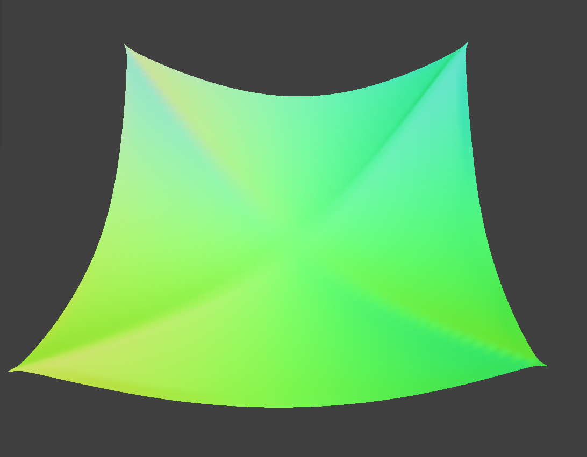 ks = 100 final state |
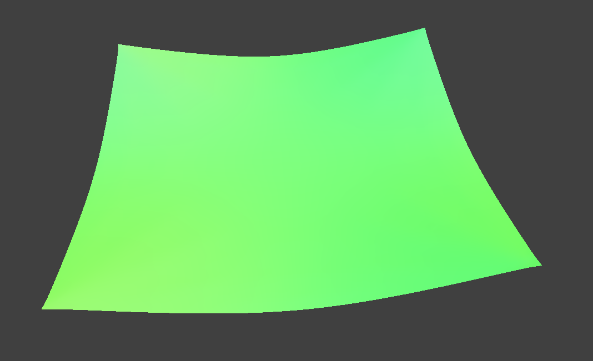 ks = 200000 final state |
Since acceleration is given by a = F/m, increasing the density and decreasing ks have essentially equivalent effects on the cloth's behavior. A higher density means greater gravitational force, which in turn makes the spring forces relatively weaker compared to gravity, causing the cloth to behave as if it were softer. Therefore, at density = 500, the observed behavior closely resembles what was seen with a low ks value, as shown in the left and middle images below. Similarly, setting density = 1 produces behavior comparable to that of a high ks value, as shown in the right image below.
|
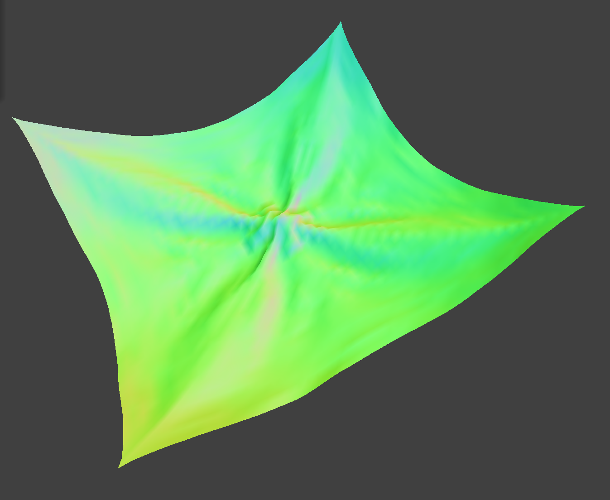 density = 500 during fall |
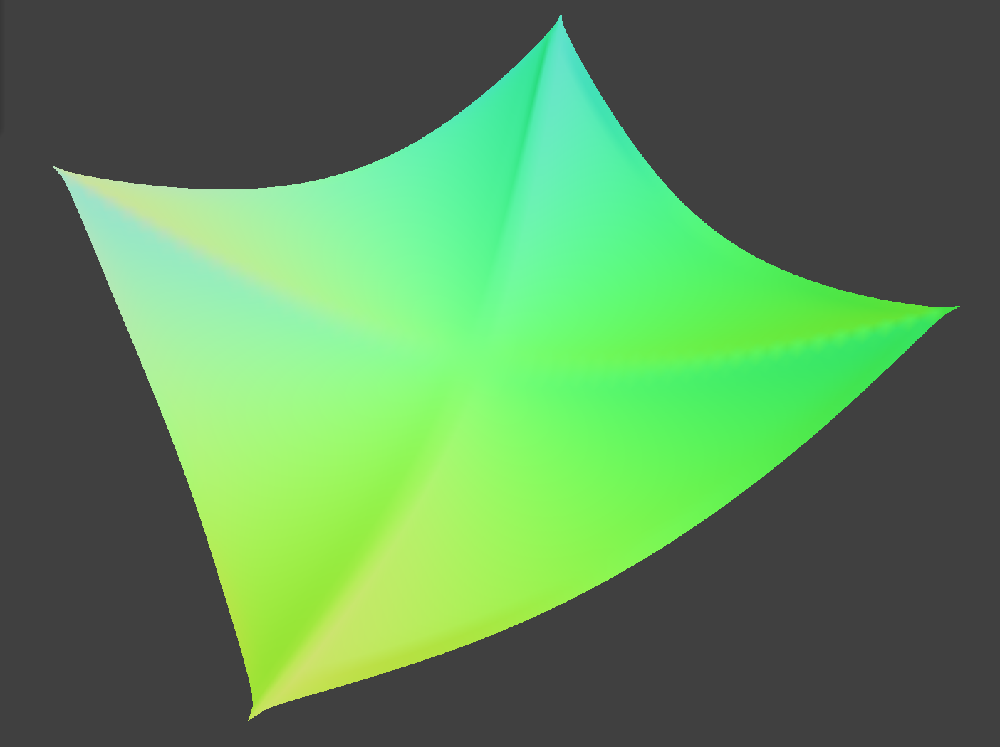 density = 500 final state |

density = 1 final state |
When damping is set to 0, the cloth oscillates extremely violently during the falling process, forming dense, wave-like ripples resembling water waves, as shown in the two images in the first row below. The amplitude of the oscillations then gradually decreases, but the decay is very slow. The cloth continues to oscillate for a very, very long time before finally coming to rest. During this period, it remains close to the final state for an extended time while still trembling with subtle micro-vibrations, as shown in the left image of the second row below.
If damping is set to 1, the cloth falls very slowly, and upon reaching its final position it stops immediately with no excess oscillation whatsoever. The right image in the second row below shows the cloth midway through its descent, from which it can be seen that the surface is very smooth.
|
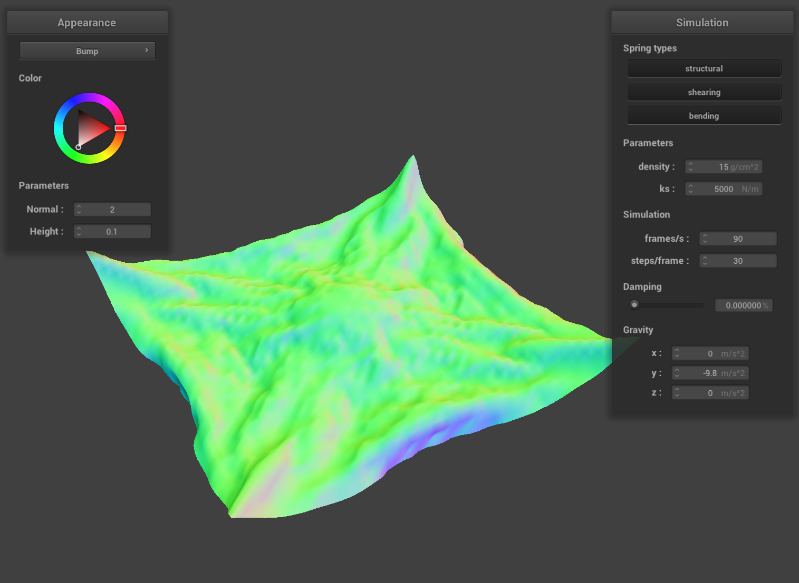 damping = 0 start |
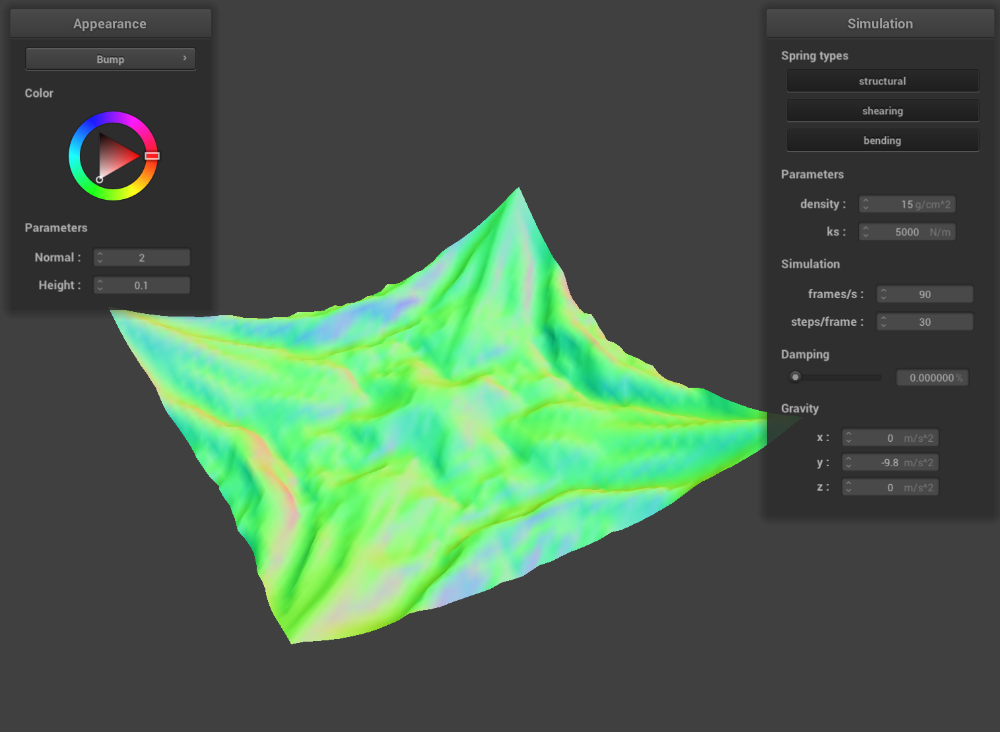 damping = 0 later |
|
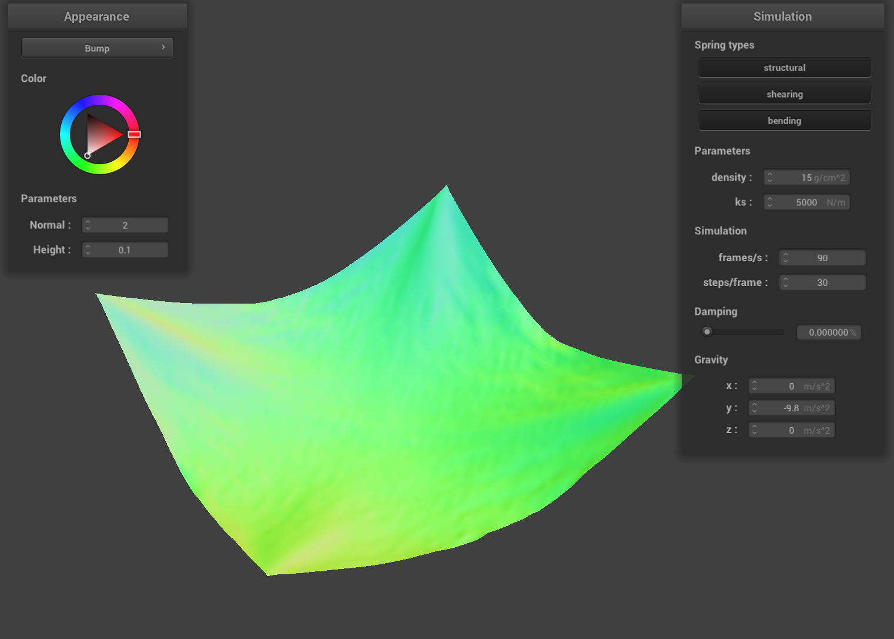 damping = 0 middle |
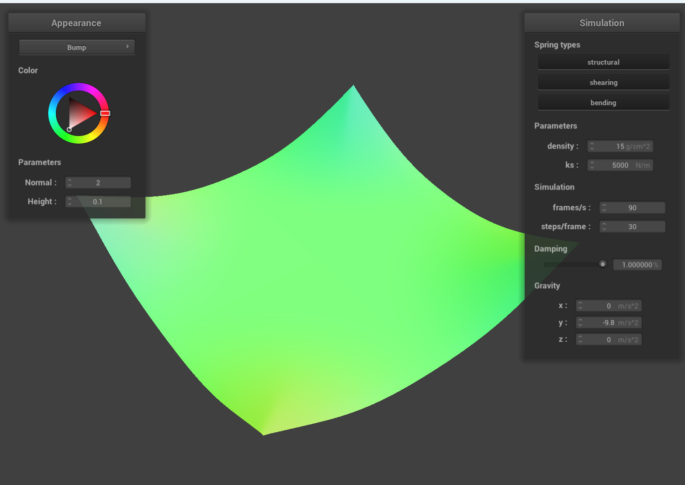 damping = 1 middle |
Here is the image of scene/pinned4.json in its final resting state:
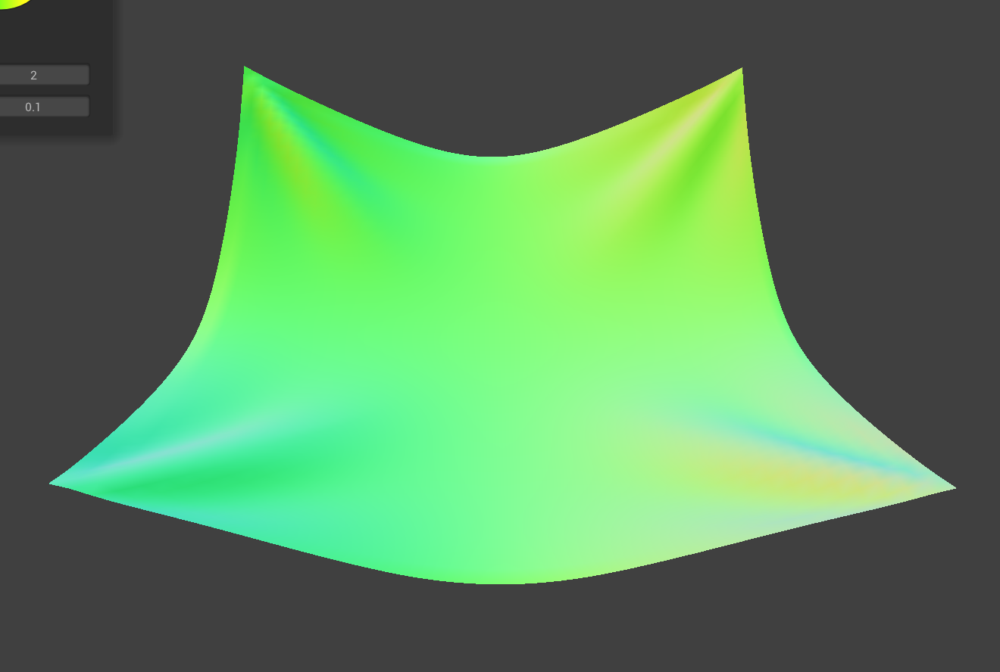
Part 3: Handling collisions with other objects
For the sphere, I strictly followed the instructions. First, I computed the position's direction from the sphere's origin, and computed the distance between them by taking the norm of this vector. Then I checked whether this distance is smaller than the radius of the sphere; if it is, it indicates that a collision has occurred. Next, I computed the tangent point by adding the unit of this direction vector times the radius to the origin, and computed the correction vector as the tangent point minus the last position. Finally, I assigned the position as the last position plus the correction times (1 - friction).
For the plane, I first computed the signed distances from both the last position and the current position to the plane by taking the dot product of the vector from a point on the plane to each position with the plane's normal. Then I checked whether the product of these two signed distances is negative; if it is, it indicates that the point mass has crossed the plane and a collision has occurred. Next, I computed the vector from the last position to the current position, then obtained the parametric ratio of the tangent point along this vector by dividing the old signed distance by the dot product of this vector and the normal, and thereby derived the tangent point. I then determined the target point by offsetting the tangent point along the normal by a small SURFACE_OFFSET, toward the side where the point mass was before crossing over (i.e., using the normal when the old signed distance is positive, and its negation otherwise). The correction vector was then computed as the target point minus the last position. Finally, if the point mass is not pinned, I assigned its position as the last position plus the correction vector scaled by (1 - friction).
With ks = 500, the cloth is very soft, draping tightly and conforming closely to the sphere, with a significant amount of sagging and a relatively large number of folds and creases. With ks = 50000, the cloth is very stiff, sitting rigidly over the sphere without conforming closely to its surface, with noticeably less sagging and far fewer folds and creases. ks = 5000 falls in between the two extremes, with a moderate degree of sagging and a moderate number of folds and creases.
|
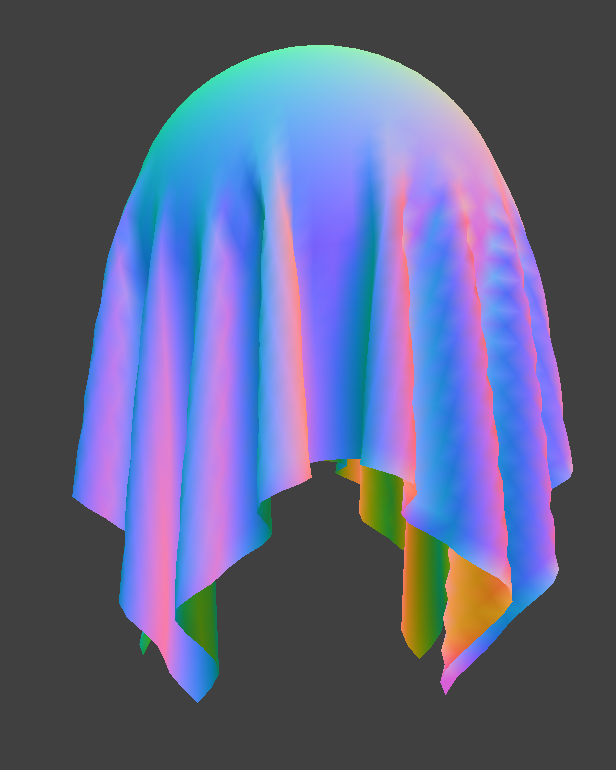 ks = 500 |
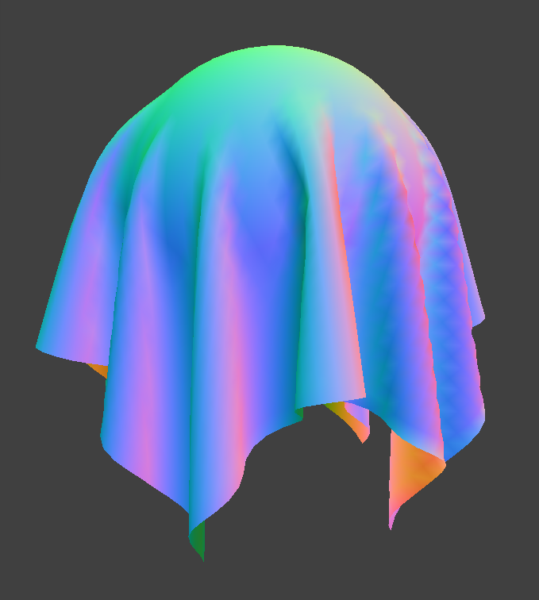 ks = 5000 |
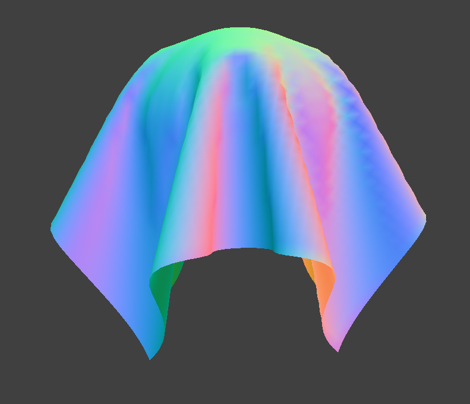 ks = 50000 |
Part 4: Handling self-collisions
For the hash function, I computed w, h, and t following the method described in the instructions, then derived the number of cells along the x and y directions, nw and nh, as width / w and height / h respectively. After that, I computed the grid coordinates along all three axes by dividing each component by the corresponding cell size and taking the floor, and finally combined them into the hash result as x + y * nw + z * nw * nh, which avoids hash collisions.
For building the spatial map, I just simply iterated through all the point masses, computed their hash values, and inserted their pointers into the corresponding hash buckets.
For self-collision, I first looked up the candidate point masses sharing the same hash bucket as the current point mass. For each candidate (excluding the point mass itself), I computed the vector from the candidate to the current point mass and its length; if the length was below 2 * thickness, I derived a correction along this vector with magnitude 2 * thickness - dist so that applying it would push the pair exactly to the threshold distance apart, and accumulated it into a running sum while incrementing a counter. After iterating through all candidates, if any qualifying pair was found, I averaged the accumulated correction by dividing by the counter, further scaled it down by simulation_steps, and added the result to the current point mass's position.
Inside the simulate function, I first built the spatial map, then iterated through all point masses and call the self-collision function.
Here are a series of images showing the cloth falls and folds on itself:
|
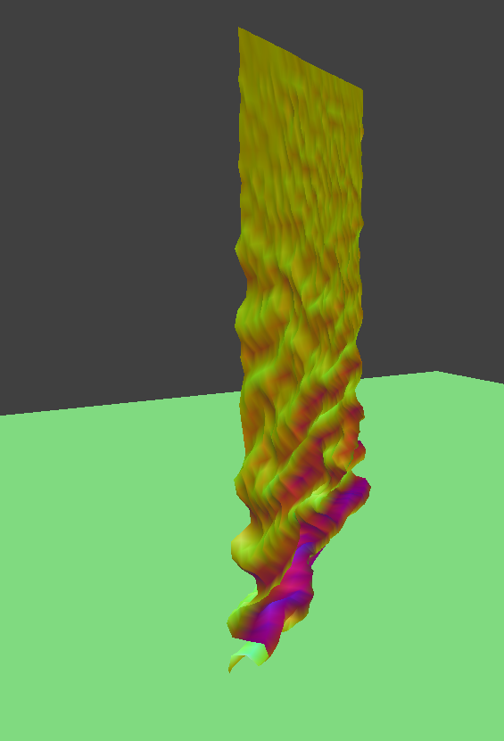 |
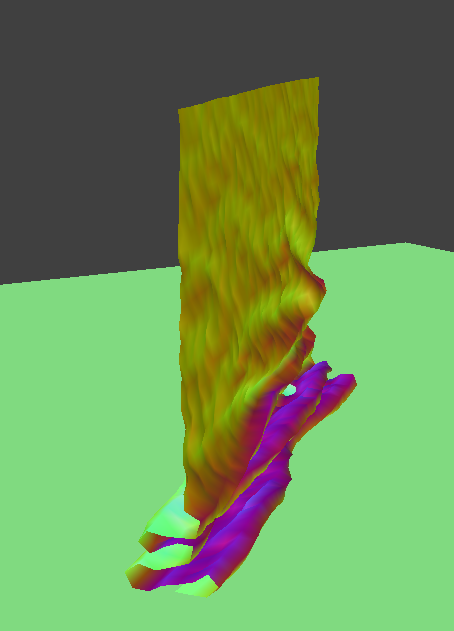 |
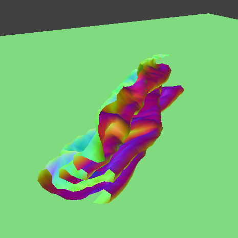 |
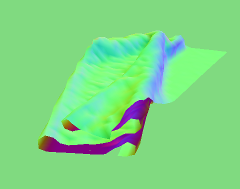 |
When ks is reduced to 500, the cloth becomes very soft, resulting in numerous small, dense folds and creases during the falling process. The final resting state also shows multiple layers of cloth folded tightly on top of one another. When ks is increased to 50000, the folds that form during the falling process are larger in scale and fewer in number. The final resting state is relatively flat, consisting of only two layers, with a large radius of curvature at the bends. As discussed in Part 2, density and ks have opposing effects. Increasing density produces results similar to decreasing ks, also resulting in many small, dense folds and creases, though during the falling process the cloth appears to spread out less horizontally, remaining more concentrated in the central region. Conversely, decreasing density produces results similar to increasing ks.
|
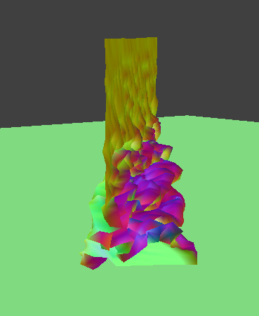 ks = 500 |
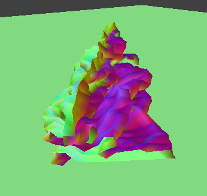 ks = 500 |
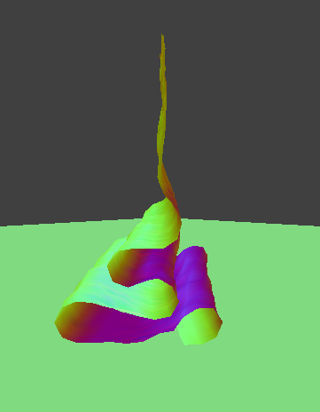 ks = 50000 |
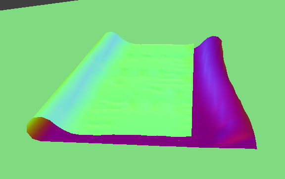 ks = 50000 |
|
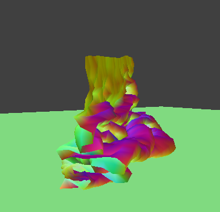 density = 50 |
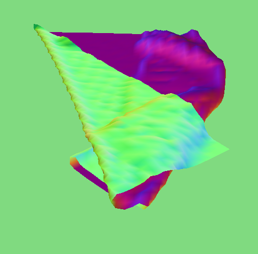 density = 50 |
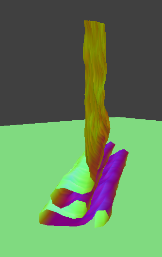 density = 5 |
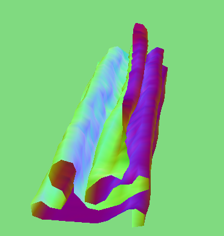 density = 5 |
Part 5: Shaders
A shader program is a program runs directly on the GPU as part of the rendering pipeline, executed in parallel across many vertices or pixels to determine how a 3D scene is ultimately drawn on the screen.
The vertex shader runs first and runs once per vertex of the input geometry. It processes and passes various vertex attributes to the next stage, such as position, normals, and texture coordinates, and performs transformations such as converting from model space to screen space, or modifying vertex positions as in displacement mapping.
After the vertex shader, the GPU rasterizes the triangles into fragments, smoothly interpolating these per-vertex attributes across the surface, and then passes the resulting attributes to the fragment shader.
The fragment shader uses them, together with uniforms like light positions, camera position, material properties, and texture samplers, applying lighting models like Blinn-Phong to compute the final color of that fragment.
In short, the vertex shader sets up the geometric and per-vertex data needed for shading, and the fragment shader consumes that interpolated data to produce the actual per-pixel color.
The Blinn-Phong shading model breaks the light reflected from a surface into three components: ambient, diffuse, and specular. Ambient is a constant term that never changes, used to simulate indirect environmental light. Diffuse describes Lambertian reflection, whose intensity is determined by the distance to the light source and the angle between the surface normal and the direction toward the light source; the diffuse contribution is the same regardless of the outgoing view direction. Specular describes the highlights of mirror-like reflection, which are only significant when the outgoing view direction and the light source direction are nearly symmetric about the surface normal. This is achieved by taking the dot product of the halfway vector and the surface normal, then raising it to a relatively high power.
|
|
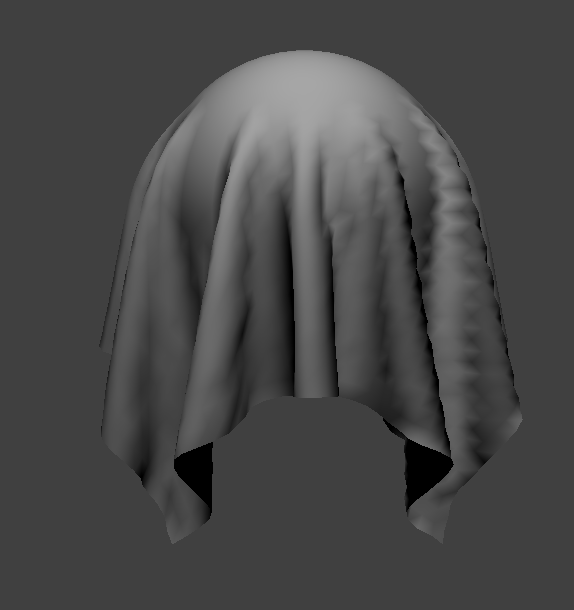 |
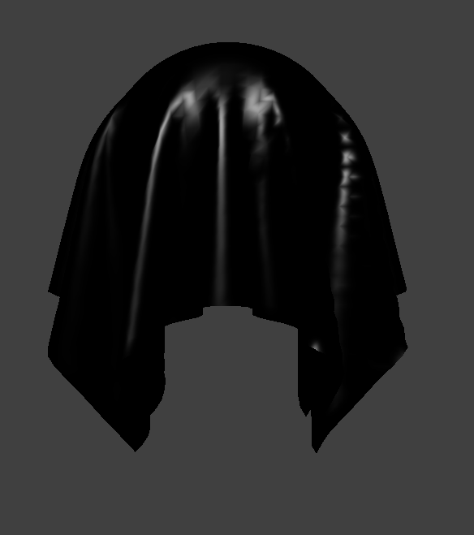 |
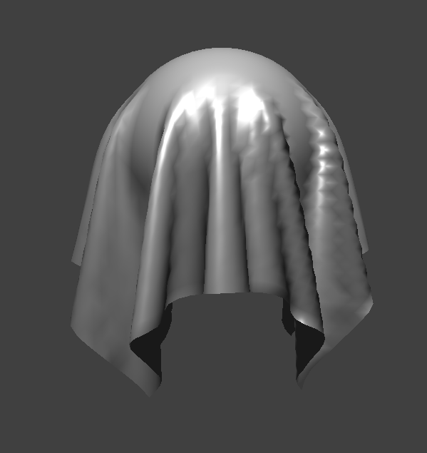 |
My own custom texture:
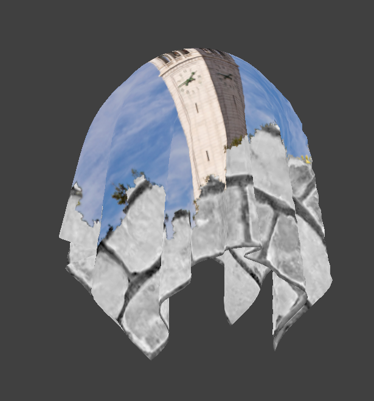
Below are the screenshots of bump mapping and displacement mapping using texture 3.
Bump mapping only modifies the direction of the surface normals without changing the actual positions of the vertices. Therefore, although the rendered result appears to have lighting and shadowing effects that suggest surface irregularities, the silhouette edges remain smooth. Displacement mapping, on the other hand, modifies both the normal directions and the actual vertex positions. As a result, the edges of both the cloth and the sphere exhibit visibly uneven, bumpy profiles, unlike bump mapping where the edges remain smooth.
When the sphere mesh's coarseness is changed from 16 to 128, the result of bump mapping shows virtually no visible change. In contrast, the result of displacement mapping shows a significantly increased degree of surface irregularity, with the bumps along the edges becoming noticeably denser. (In the images below, the height scaling for the 128 case was actually set to a smaller value than for the 16 case, yet the effect still appears more pronounced.)
|
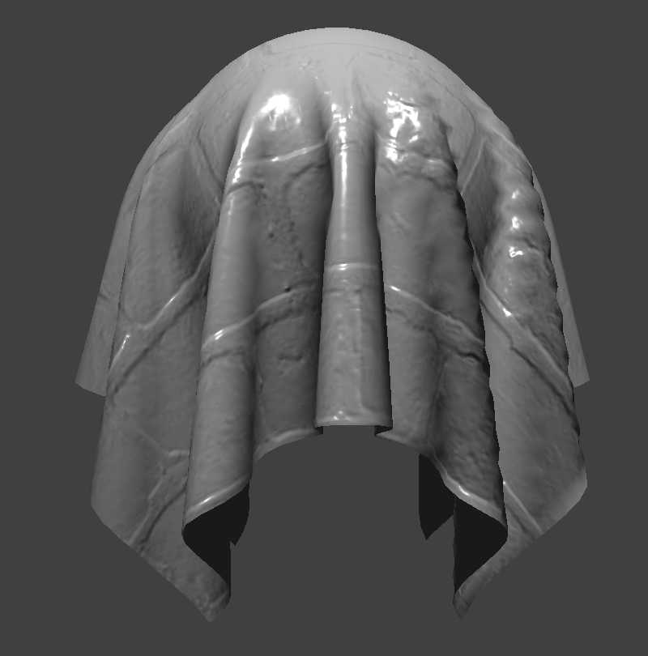 |
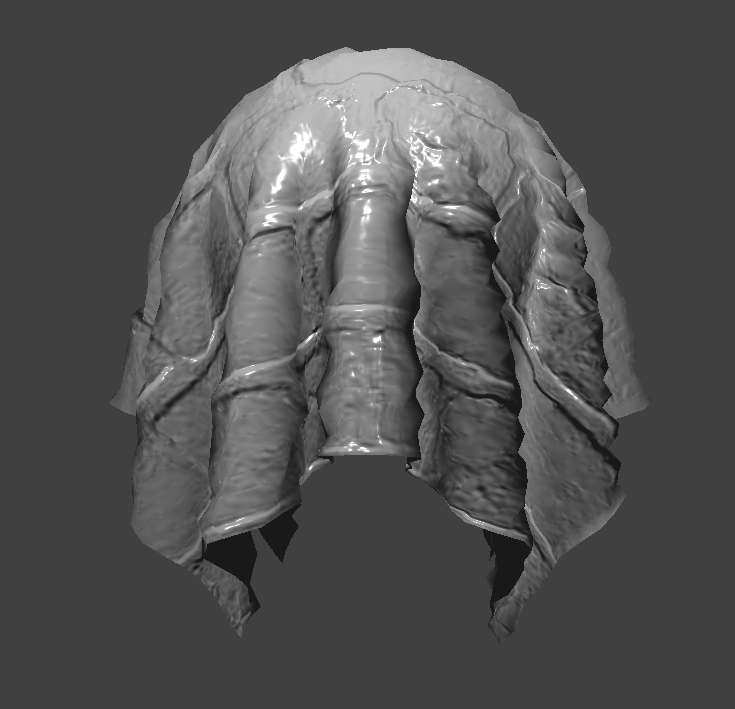 |
|
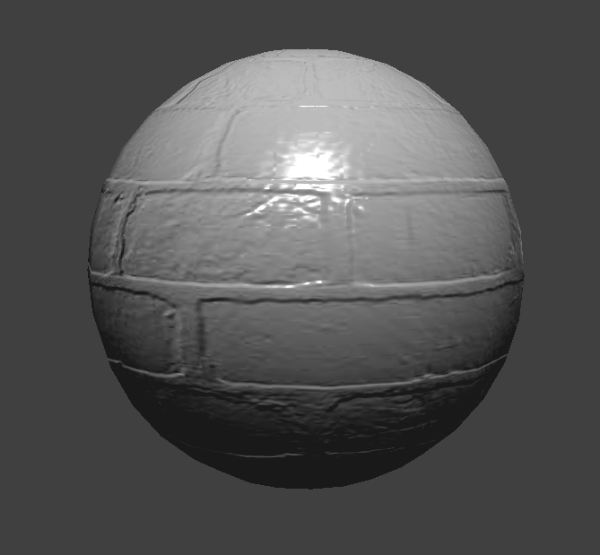 |
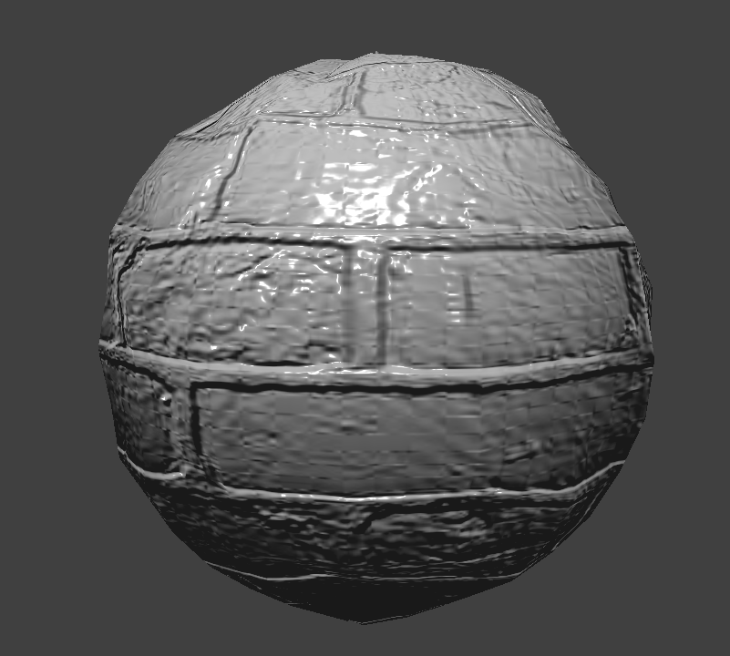 |
|
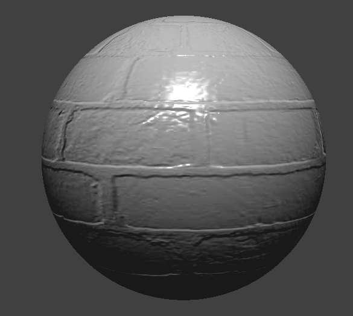 |
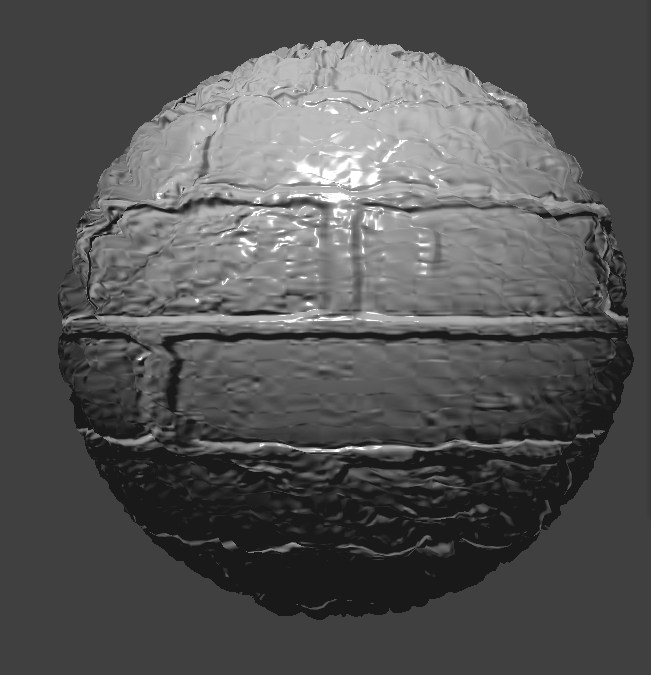 |
Mirror shader on cloth and sphere:
|
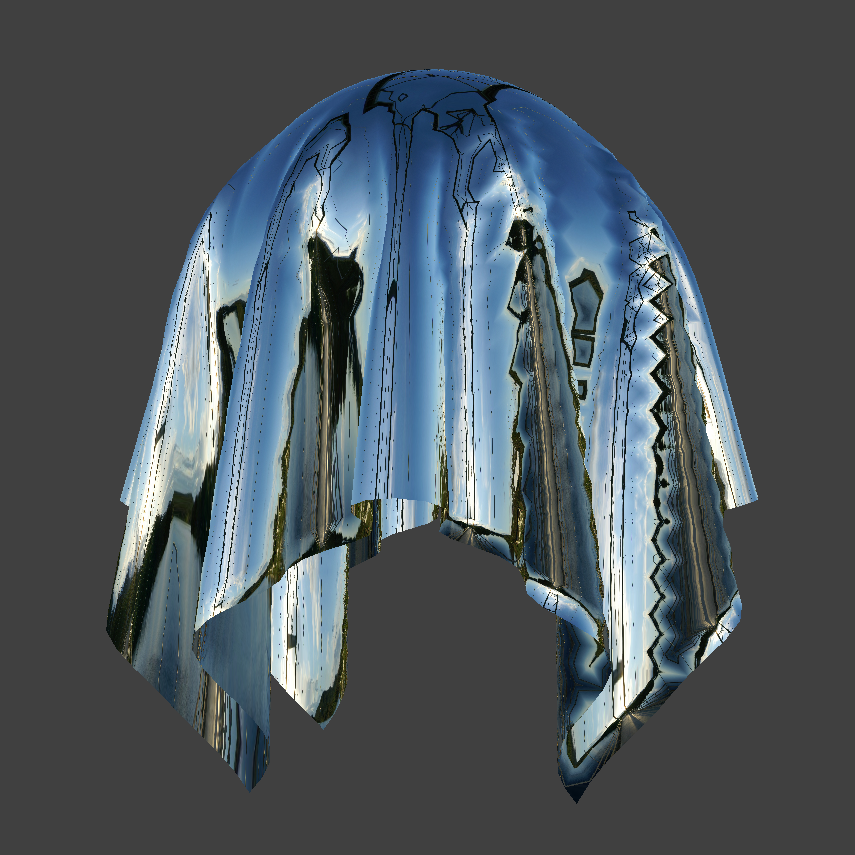 |
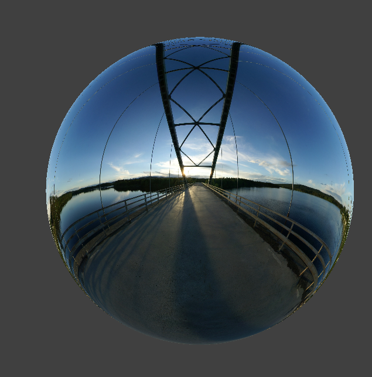 |
Part 6: Extra Credit - Additional cloth simulation features!
Wind simulation:
To achieve a spatially varying wind effect, we apply an external force to all point masses:
F = wind × (0.5 + gust(p, t) + ripple(p, t))
where
- gust = 0.5 + 0.5 × sin(2.0·p.x + 1.7·p.y + 1.3·p.z − 4.0·wind_time) — a low-frequency traveling wave that sweeps across the cloth. Different positions sample different phases, so the upwind edge feels a peak while the trailing edge is in a trough.
- ripple = 0.25 × sin(5.0·p.x − 3.0·p.z + 6.0·wind_time) — a higher-frequency, smaller-amplitude perturbation layered on top to break symmetry and create finer flutter.
The 0.5 baseline keeps the force always blowing in the wind direction (never reversing), while the two sinusoids modulate strength between roughly 0.25× and 1.75× of the base wind. Because both terms depend on position, two adjacent point masses see slightly different forces at the same instant.
Image 1 shows the effect of wind applied along the x-axis. Image 2 shows the effect of wind applied simultaneously along both the x and z directions, captured at the moment the cloth is nearly being blown off the sphere. Images 3 and 4 both show the effect of wind applied along the positive y-axis (the vertical direction in this coordinate system). It can be observed that different positions experience different forces at different moments in time — sometimes the left side of the cloth billows higher, and sometimes the right side does.
|
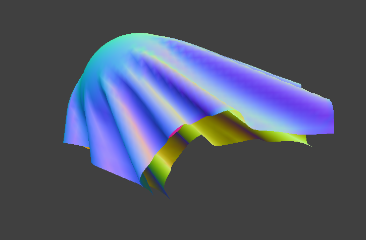 |
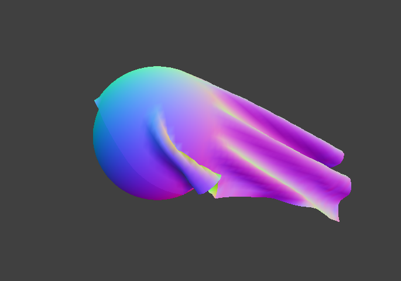 |
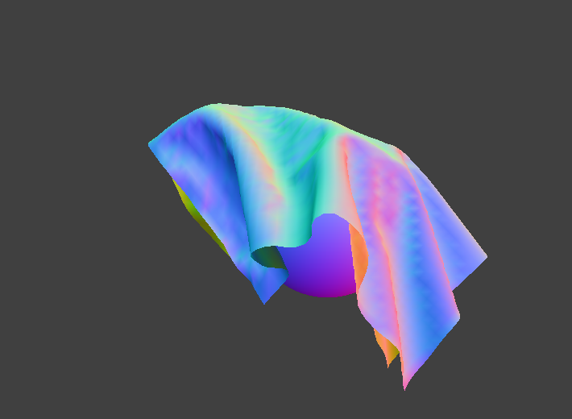 |
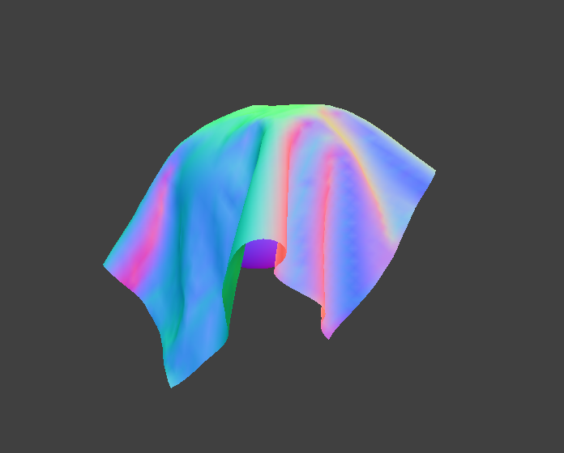 |